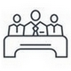

Compétences
AUTONOMIE
ORGANISATION
TEAMWORK
Maxime Pohle

Langages
HTML
CSS
JAVASCRIPT
Informations
Bonjour, moi, c'est Maxime Pohle.
Alors, par où commencer ? Je sais ! Laissez-moi me présenter.
J'ai 21 ans. Je possède un niveau B2 en anglais et un niveau B1 en espagnol. Je possède également le permis B avec un véhicule.
J'aime les jeux vidéos, en particulier, les jeux bac à sable. Ils permettent de faire travailler la créativité tout en se divertissant. J'adore regarder des séries policières car comme à l’instar des protagonistes, j’aime trouver la solution à un problème. J'aime aussi le football et le basket-ball car ce sont des sports qui rassemblent et où le collectif est important.
Comment me décrire ?
Les projets auxquels j'ai participé durant mon DUT Informatique m'ont aidé à développer mon sens de l'organisation, ainsi que mes capacités de management d'équipe. En effet, j'ai eu l'occasion à deux reprises d'être assigné à des rôles décisionnaires, notamment lors du projet « Virtual War » (jeu de plateau informatisé) et « Edurace » (jeu éducatif) où j'ai dû gérer mon groupe de travail en répartissant les différentes tâches ainsi qu'en prenant des décisions lors de brainstormings. Possédant un bon esprit d'équipe, cela me permet de travailler de manière plus pertinente avec les différents acteurs d'un projet et de mettre en avant l'entraide.
D'où vient ma passion pour l'informatique ?
Alors que j'étais encore au collège, mon frère part en DUT Informatique. Il me montre alors ce qu'est l’informatique, et plus précisément la programmation. J'apprécie tout de suite cela et je décide de faire plus tard comme lui un DUT Informatique.
Compétences
Informatiques
- Java100%
- SQL85%
- C85%
- JavaScript70%
- HTML70%
- CSS70%
- C#40%
- C++20%
Générales
- Travailler en équipe
- Inventeur
- Organisation
- Analyse des problèmes techniques
- Déterminer des mesures correctives
- Établir un cahier des charges
- Gestion de projet
- Analyser les besoins du client
Formation
- 2016 - 2017 : Licence Informatique à l'IUT Lille 1
- 2016 : Stage à l'ISEC (Instituto Superior de Engenharia de Coimbra) au Portugal avec comme projet d'implémenter un lexer et un parser dans Java
- 2014 - 2016 : DUT Informatique à l'IUT Lille 1
- 2014 : Baccalauréat S (Scientifique) Spécialité SVT (Sciences de la Vie et de la Terre) Mention Assez Bien au Lycée Gérard de Nerval Soissons (02)
Expériences
Au cours de mes trois années universitaires, j'ai réalisé plusieurs projets, seul ou en groupe.
Edurace
Tout d'abord, j'ai commencé par développer un jeu éducatif en binôme nommé Edurace. Edurace a pour objectif d'aider les enfants lors de l'apprentissage des savoirs de base (Mathématiques, Histoire...). Ce projet a commencé par un brainstorming afin de déterminer quelle sera l'idée générale de ce jeu.

Le joueur doit répondre à plusieurs questions données par le programme sur le thème des mathématiques. Lorsqu'il choisit la bonne réponse, le joueur peut continuer le jeu par contre s'il choisit la mauvaise réponse, il perd et alors il devra recommencer la partie s'il veut continuer à jouer au jeu créé. Mais encore, le joueur peut diriger un vaisseau afin de choisir les bonnes réponses et esquiver des obstacles présent dans le jeu. Ce jeu possède alors une durée de vie illimitée car le jeu se finit dès que le joueur a faux. Il peut alors repérer son niveau grâce à un score et un tableau des scores.
Grâce au projet que nous avons développé, nous avons été choisis par nos enseignants afin de pouvoir montrer le projet réalisé à des enfants.
Virtual War
Ensuite, il y a eu le projet Virtual War, un jeu de plateau où les deux joueurs ont trois pièces chacun et le but est de détruire les trois pièces de l'adversaire. J'étais dans un groupe de cinq, je devais développer et tester le jeu. En testant le jeu, j'ai appris beaucoup de choses sur la gestion d'un projet avec le rédaction d'un cahier des charges (qui décrit les fonctionnalités du jeu) et d'un cahier de test.
Exemple de Virtual War
Life-Generator
Après, au début de la deuxième année de DUT, je devais faire un projet avec la méthode Agile. Avec mon groupe, nous avons décidé de réaliser un créateur de personnages Life-Generator.

Visuel de Life-Generator
Lexer et parser
Enfin, pour mon stage de fin de diplôme, je devais réaliser un lexer et un parser dans Java. Si vous ne savez pas ce que c'est, en toute simplicité, c'est un traducteur informatique. Par exemple, on écrit A est grand, le traducteur comprend que "A" est un prénom, "est" est un verbe et "grand" est adjectif. Il garde comme information que A possède une qualité c'est qu'il est grand. Voilà, pour l'explication. Étant donné que je n'avais aucune connaissance sur le sujet, ce stage m'a appris à découvrir de nouveaux savoirs au-delà de mon apprentissage universitaire. De plus, j'ai appris à m'organiser grâce à ce projet.
Voici le rapport de stage en anglais.
Contact
Portable ☎
- 06.13.24.27.35
E-mail ✉
- pohle.maxime@gmail.com
Adresse
- 6 route de Chavigny, Cuffies 02880